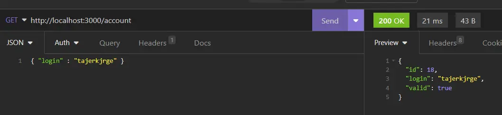
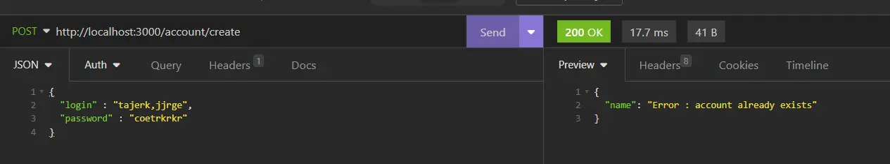

B.A-BA Application Web : Comprendre et Mettre en place un Backend
- MON
- 2022-2023
- temps 3
- backend
- bdd
- typescript
- Tuncay Bilgi
MON Débutant.
Savoir comment fonctionne une application Web et enfin le lexique obscure des développeurs. Mettre en place sa propre application complexe.
Ce MON est un cours sur le Développement Web, il se concentre sur ce qu'on appelle le Backend. Vous pourrez y apprendre la théorie et aussi la pratique avec la mise en place de votre propre application.
Dans ce MON, nous allons voir comment mettre en place une application complète, avec une interface, base de données et un service de création de compte. Je vous présenterai les grands principes d'une application web, et plus précisément, comment structurer un Backend pour qu'il soit maintenable et lisible. Le but est d'apprendre à structurer un Backend proprement.
Je vous présente une manière de faire les choses, il y en à d'autres et je ne garantie pas que la mienne soit parfaite.Aussi,je ne me préoccupe pas de programmation par les tests.
Mots clés expliqués dans ce cours
Mots clés expliqués dans ce cours
- Frontend, Backend, Base de données
- Framework
- HTML,CSS,JS
- style,layout
- API, REST, ORM, CRUD
- Requêtes
Ressources :
-
Les documentations :
-
Les MON associés :
-
Code source :
Prérequis :
- Pour la théorie : Avoir un ordinateur, une connexion internet, l'eau courante
- Pour la pratique : Avoir une première expérience avec le développement web.
Étapes :
- Comment marche une application web
- Architecture du BackEnd
- Initialisation du projet :
- Frontend
- Backend
- Base de données
- Mise en place d'une entités Account
- Mise en place de la création d'un account
Comment marche une application web:
De quoi est constituée une application web ?
Pour notre application, nous avons besoin de trois briques : Frontend - Backend - Base de données
Ces trois parties ont leurs rôle bien défini :
-
Le Frontend est la partie du code qui est présentée à l'utilisateur. C'est le programme qui va afficher ce que l’utilisateur voit et ce avec quoi il va interagir. Le Frontend est envoyé à l'utilisateur, il est donc exécuté par sa propre machine. Quand vous afficher une page sur internet, c'est votre ordinateur qui fait le travail d'afficher les boutons, de regarder quels boutons sont cliqués, de changer de page etc...
-
Le Backend est la partie du code qui manipule les fonctionnalités complexes, et qui ne concernent pas directement l'affichage. C'est le programme qui va exécuter des fonctions qui permettent de répondre aux attentes de l'utilisateur. Le backend reste sur le serveur, il est exécuté par celui-ci, contrairement au frontend. Si vous avez une application web qui propose d'interagir avec une IA, l'utilisateur va interagir à travers le frontend, mais l'IA elle même, sera gérée par le Backend.
-
La base de donnée, qui permet de stocker des données persistantes. Elle reste sur le serveur, et encor plus, on veut qu'elle soit impénétrable, car nous voulons conserver et cacher les données importantes à notre systèmes, ou les données privées qui concernent nos utilisateurs.
Ces parties communiquent entre elles à travers ce qu'on appelle des requêtes. Le frontend envoie des requêtes au backend, qui lui répond, en lui envoyant une réponse. Pour écrire cette réponse, le backend peut aller chercher des données dans la base de données. Pour ce faire, il va la questionner, avec langage spécifique comme du SQL par exemple.
Exemple à la mode en 2023 - ChatGPT :
L'utilisateur interagit avec une page qui permet de poser une question à l'IA ChatGPT. Cette page est le frontend, qui est exécutée par son ordinateur. Quand il rentre sa question et qu'il appuie sur le bouton envoyer, son ordinateur va envoyer une requête au Backend de CHatGPT, qui tourne sur les serveurs de OpenAI.
Ce backend, va récupérer la question, et la passer à travers l'IA pour avoir une réponse. Il va ensuite renvoyer cette réponse au frontend pour qu'elle soit affichée à l'utilisateur. Enfin, quand l'utilisateur à fini d'interagir, le backend va formatter les données de l'utilisateur : Le nom de compte, la question posée, la réponse renvoyée etc.. et il va placer ces données dans la base de données pour qu'elles y restent longtemps.
La prochaine fois que l'utilisateur vient sur le site de ChatGPT, sans qu'il ait besoin d'interagir, le front va envoyer une requête au back, qui lui demande de récupérer les données de l’utilisateur, le back s’exécute , va chercher ce qu'il faut dans la base de données, et les donnes au frontend pour que cela soit affiché et que l'utilisateur puisse reprendre une ancienne conversation.
Les attentes différentes remplies par les trois parties d'une application :
Ces trois parties ayant des rôles bien différents, leurs code n'a rien à voir. Coder du Frontend ne ressemble pas à coder du backend, on n'utilise pas les mêmes fonctions, on ne se pose pas les mêmes questions, et parfois, on n'utilise même pas le même langage de programmation. Par exemple :
- Le frontend à besoin d'être du code qui puisse être lu par les navigateurs web.
- Le backend à besoin d'être du code relativement efficace, qui réalise le travail sans gaspiller de ressources et de façon consistante pour tous les utilisateurs.
- La Base de données doit pouvoir être questionnée, on doit pouvoir y retrouver les informations nécessaires facilement.
Pour répondre à ces besoins différents, on utilise d'abords des langages différents :
- Les navigateurs ne comprennent que le HTML, le CSS, le JavaScript et le Webassembly, il est donc impératif de choisir ses langages.
- Pour être efficace, on utilise des langages orientés objet, stables, qui s’exécutent rapidement, et qui sont potentiellement typés. On utilise le plus souvent du Javascript, du Typescript, du php, du Java, du C# ou dans une moindre mesure, du Python.
- Les bases de données communiquent à travers un langage : souvent du SQL ou du grapheQL. Elles ont cependant toutes leurs particularités et pour cela elles modifie le langage de base, on dit qu'elles utilisent un dialect.
Aussi, pour répondre à ses besoins, on utilise des principes différents :
- Pour le frontend, on pense à l'UI/UX et à la légèreté de l'application. On veut envoyer le strict nécessaire à l'utilisateur pour que ça s'affiche vite.
- Pour le Backend, on veut de l'efficacité, des temps d'executions bas, la possibilité de gérer des centaines d'utilisateurs simultanés de façon sécurisée. Pour cela, on pense à l’algorithmie et à la cybersécurité.
En pratique :
Les langages :
Comme dit plus haut, différents besoins, différents langages. Voici quelques langages couramment utilisés, et une introduction sur leur fonctionnement.
-
HTML,CSS : Ce couple forme un langage qui permet d'afficher des pages sur un navigateur web. Le html décrit le Layout, c'est à dire toutes les données qui seront affichées, et ouù elles seront affichés. Par exemple une page contient un titre, un paragraphe, un bouton en bas de page etc... Le CSS décrit le style avec lequel ces données sont affichées. On y décrit quels sont les tailles des paragraphes, la couleur des boutons, la police utilisée etc..
-
Javascript (Js) : Langage incontournable du développement web. Le javascript sert en premier lieux à injecter de l'interactivité dans les pages web. Il à le mérite d'être un des seuls langages que tous les navigateurs comprennent, avec les deux citées plus haut. Si un bouton doit incrémenter un compteur, si il faut envoyer une requête au backend, cela se fera avec du javascript. Ce langage est aussi utilisé pour du Backend.
-
Python : Le python à le mérite d'être simple à appréhender. Il possède des librairies qui facilitent d'autant plus la création de site web. Malheureusement, ce n'est pas un langage compris par les navigateurs web, il n'est donc utilisé que pour le backend. Sont utilisation est cependant restreinte. En effet, le langage est lent est gourmand en ressources, l'inverse de ce dont en a besoin en Backend.
-
Typescript (ts) : langage récent qui est un Superset du Js. C'est à dire que c'est du Javascript avec des fonctionnalités en plus. Ces fonctionnalités sont principalement les types. Ts est donc un langage typé, c'est à dire que pour définir une variable, il faut lui donner un type qui ne peut pas être changé. Ce langage est utilisé autant en Front qu'en Back puisque qu'il est compilé en Javascript. C'est à dire qu'à partir du code en TS, un compilateur va créer un nouveau code en Js. Ce langage est de plus en plus utilisé par les développeur javascript car il facilite le développement.
-
JSON : Format de données utilisé par les applications web pour communiquer.
Les API :
Pour communiquer entre eux, le Backend et le frontend utilisent des requêtes. Une requête est un message que le Front va envoyer au Back, ce message va enclencher une fonction dans le back qui finalement, envoie une réponse au front.
Pour pouvoir échanger des requêtes, les programmes doivent être d'accord sur le format des données à échanger. Un de ces format et l'API. Une API REST est un ensemble de message, que le navigateur peut envoyer à un serveur. Le serveur, si il implémente cette API, doit être en mesure de recevoir le message, de le comprendre et de répondre.
Les API REST s'articulent autour de deux principaux types de messages : GET | POST Le GET permet au Frontend d'indiquer au Back qu'il lui demande une information. Cela peut être une information de la base de donnée ou une information qui résulte d'in traitement.
Le POST permet au Frontend d'envoyer une donnée au Back, qui pourra ensuite la traiter et l'envoyer à la base de donnée si nécessaire.
Pour que le serveur puissent traiter les requêtes, ils doivent mettre en place des fonctions qui execute la requête. Par exemple si le front demande de créer un nouvel utilisateur à partir d'un nom et d'un mot de passe, le back doit avoir une fonction qui prend un nom et un mot de passe et qui créer un utilisateur avec. Ces fonction essentielles appartiennent au CRUD : Create READ Update Delete. Le serveur doit savoir faire les 4 pour dire qu'il implémente une API Rest (ou Restful pour l'adjectif).
Faire ce CRUD pour chaque type de données différentes dans le back est d'un ennui mortel, heureusement, il existe des frameworks, qui le font automatiquement pour nous.
Les frameworks :
Toutes les applications web possèdent des points communs. Elles proposent par exemple un programme qui tourne en continue et qui écoute les requêtes d'un utilisateur, elles permettent à l’utilisateur de cliquer sur une page et que ce clique soit pris en compte etc..
Au lieu de réinventer la roue depuis zéro et de coder ces fonctionnalités à chaque application, les développeurs ont inventés ce qu'on appelle un framework.
Les frameworks sont des environnements de programmation. L'équivalent d'une librairie python. Il permettent de mettre en place rapidement tout ce qui est nécessaire au programme que l'on veut coder.
Il y a des frameworks pour le frontend, des frameworks pour le backend et enfin des frameworks qui allient les deux ensembles, ce qu'on appelle un Meta Framework.
Frameworks Front
Frameworks Front
Frameworks Back
Frameworks Back
Meta Frameworks
Meta Frameworks
Les Frameworks sont opinionated à un certains degré. C'est à dire qu'ils ont une opinion sur les manières de faire. Par exemple, faut-il séparer clairement certains composant où les utiliser ensemble ? Faut-il écrire une fonction d'une manière ou d'une autre ?
Il est important de choisir un framework dont on supporte les opinions car si on essaye d'aller contre le framework, cela complique énormément la tâche du codeur, alors que l'on veut la faciliter. Certains frameworks sont par conception très libre. Il y a par exemple Node.js, qui laisse une immense libertés aux utilisateurs. C'est le framework à la base de tous les autres Framework backend et frontend javascript, à la base de npm.
Pour gérer quels frameworks on utilise, les installer, les mettre à jour etc... on utilise npm. Les commandes npm sont rentrées dans le terminale de commande et permettent gérer nos projets.
Par exemple si je crée un projet avec certains frameworks, et que quelqu'un veut l'utiliser, il doit d'abord tout installer de la même manière que je l'ai fait sur mon ordinateur. Pour faciliter la tâche, il existe npm install qui permet de faire ça d'un coup, magiquement.
Exemples :
- Frontend :
ReactJS et Angular nous proposent de créer des composants, qui seront insérés dans une page html et envoyés à l'utilisateur. Ils ont des opinions différentes.
Angular prône une séparation totale des fonctions. La page html ne s'occupe que de l'affichage, le fichier js (javascript) s'occupe de l’interactivité. Chaque composant est défini par une classe et on doit donc faire attentions à certaines problématiques lié à cela. La communication entre le html et le js est gérée par des fonctions propre à Angular.
React prône plus de flexibilité. Les pages sont en jsx, qui est une fusion de html et de js. Cette page affiche des composants qui sont aussi en jsx et on peut y placer si nécessaire l’interactivité. Aussi, les composants sont des fonctions, et ils interagissent entre avec des hooks, des fonctions préconstruites.
Comme on peut le voir, les deux frameworks répondent aux mêmes besoins, d'une manière (parfois subtilement) différente.
- Backend :
Sequelize et TypeORM sont deux ORMS différents. Un ORM est un framework qui permet de connecter les fonctions ou les objets das notre programme, aux données dans une base de données.
Sequelize nous permet de faire cela en js, et laisse de la liberté au programmeur de choisir comment organiser son code. TypeORM nous force à suivre l'architecture classique d'un backend(que l'on verra plus bas). En plus de cea, il utilise Typescript, qui nous oblige à avoir un langage typé (de type Java ou C#). Les types et l'architecture apportent une certaine lourdeur, mais permettent d'avoir un programme solide, plus simple à maintenir en équipe.
Quels Framework utiliser ?
Pour mettre en place ces trois composantes d'un application, nous pouvons :
- Écrire du code à la volée, ne pas utiliser de framework.
- séparer le code de sorte à avoir trois services, qui fonctionnement en parallèle.
- Utiliser un Méta-framework, qui permet de regrouper les différentes parties d'une façon cohérente et contrôlée.
La première idée est la plus mauvaise idée que vous n'ayez jamais eu de votre vie. On utilise forcément un framework quelque part, sinon cotre site ressemblera à un blog des années 2000. En plus de cela, vous allez probablement mettre du code n'importe où, ne pas créer de Backend et tout envoyer à l'utilisateur, qui pourra ensuite hacker vos données et vous les revendre alors qu'elles vous appartiennent.
La deuxième idée et la manière classique de faire les choses, on choisit un framework pour le front , un autre pour le back et on code nos deux parties différentes de façon indépendante. C'est la méthode utilisé dans le projet FirePixel ou dans le POK Jeu de Grattage. Cela permet d'avoir un code structuré, qui envoie seulement le nécessaire à l'utilisateur, qui est relativement protéger contre les cyberattaques (si on respecte les indications du framework). En plus de cela, on peut travailler en équipe sur le projet de manière plus fluide. Certains devs peuvent avancer le front pendant que d'autre avancent le Back, il n'y a pas de conflits car les fichiers sont séparés.
La troisième idée est plus récente, le plus gros avantage est de ne as avoir à réfléchir. Les Méta Framework sont les plus opinionated de tous,a tels points qu'ils ont même une opinion sur les frameworks que vous devez utiliser. Cela à des avantages, ça permet de ne pas avoir à trouver les frameworks soit même, mais aussi, ces Metaframeworks garantissent une grande compatibilité entre les différents composants de l'applications, et une grande simplicité d'utilisation. Je le conseille au débutant qui ne savent pas quels frameworks utilisé, et aussi aux développeurs confirmés qui connaissent déjà un framework inclus dans le package et qui veulent étendre leurs possibilités.
Architecture du Backend :
Le backend réalise plusieurs actions spécifiques, il :
- Expose une application sur le port spécifique d'un serveur.
- Expose des routes (des urls) à travers lesquelles on peut communiquer avec lui.
- Execute du codes selon les requêtes qui lui sont envoyées.
- Il met en place des requêtes pour aller chercher des informations dans la base de données.
- Il façonne des objets pour les enregistrer dans la base de données.
Pour réaliser ces divers tâches, on pourrait tout rassembler dans un seul fichier nommé par exemple backend.js . Le problème, est que cette méthode créer un immense fichier illisible, dur à debugger ou à factoriser quand il y a besoin de mener des changements. On essaie donc, au maximum de fractionner le projets en fichiers qui n'ont qu'une unique fonction. on aura donc, dans l'ordre défini précédemment :
- Le fichier index
- Le contrôleur
- Les services
- Le repository
- Les entités
Notre Backend va gérer la création de comptes pour un site grâce à TypeORM.
l’arborescence est la suivante :
backend |_controller |_accountController.ts |_entity |_Account.ts |_service |_accountService.ts |_index.ts |_datasource.ts
Le controller est le fichier qui répertorie les routes accessibles. Ces routes prennent en entrée une requête et renvoient une réponse. Pour créer la réponse, elles se servent des fonctions contenues dans les services. Ensuite, si besoin, les services font appels à l'entité pour créer un objet formaté qui peut être envoyé dans la base de données. Toutes les informations liées à la base de données sont contenues dans datasource.ts qui est le coeur de TypeORM. Ce dernier nous permet de se connecter facilement avec notre base de données, et créer pour nous des repositories automatiquement. Ces repository contiennent les fonctions qui créent les requêtes sql comme 'SELECT account *' ou 'SELECT account WHERE ...'. Enfin, le fichier index.ts reprend toute l'application et la rend accessible sur le port 3000 de votre ordinateur.
Coté frontend, on à une application qui permet d'envoyer des requêtes sur le même port 3000 de votre ordinateur, ces requêtes seront donc directement captées par votre backend.
Mise en place d'une application :
Initialisation du projet :
On commence par se placer dans un dossier vierge que l'on ouvre dans un éditeur de code (VS code pour moi). On peut faire un git init, voici d'ailleurs le lien du repository git de ce projet sur mon github. N'hésitez pas à aller regarder le code directement là-bas, je ne vais pas le copier-coller ici. On aura deux dossiers principaux :
- Frontend
- Backend
En dehors de ces deux fichiers, on viendra placer les fichiers utiles pour la globalité du projet, comme un fichier .env qui possède des variables d'environment, un fichier .gitignore etc..
Cette partie demande plus de pré-requis.
Cette partie demande plus de pré-requis.
Savoir utiliser :
- un Logiciel pour coder (comme VScode)
- javascript
- les langages typés
- la programmation orientée objet
- un outil d'envoie de requête (curl, postman ou insomnia)
Avoir installé :
- Node.js
- Docker
Frontend :
On choisit d'utiliser le framework ReactJs, on initialise donc un projet React :
npm
le front peut être lancé sur le port par défaut 5432 grâce à la commande :
npm run dev
On ne s'occupe pas plus du front ici, référez vous à des MON tels que Angular Angular2 React.
Backend :
On utilise les Frameworks suivants :
- Node/Express pour le serveur
- TypeORM en tant qu'ORM
on initialise le projet de cette manière :
npx typeorm init --name cyberenv-back --database postgre --docker --express
Cela met en place un projet TypeORM nommé cyberenv-back qui utilise une base de données postgreSQL, docker et est basé sur express.js.
On peut y voir plusieurs dossiers, on y revient dans le chapitre d'après.
Base de données :
On met en place une base de données PostgreSQl. Elle est hébergée à travers un conteneur docker. Je vous invite à voir le MON Docker et/ou de copier coller mon fichier docker-compose. Vous pouvez aussi mettre en place votre base de données vous même.
Le plus important est de modifier le fichier data-source.ts . Ce fichier rassemble toutes les informations liées à la connexion à votre base de données. Il est appelé dans les différentes contrôleurs.
Mise en place d'un Account.
C'est optionnel mais puisque nous utilisons Typescript, un langage typé, nous ajoutons un dosser dto, qui contient les classes que vont manipuler les services. Cela permet de profiter de tous les bénéfices d'un langage typé, comme la correction et la suggestion automatique du code.
Nous allons voir le processus de création d'un form de création de compte pas à pas, le code est sur mon github et les explications sont ci-dessous. Nous avons besoin d'une classe de données : Account.
Dans le dto, nous définissons ce qu'est un account. Il est défini par une classe qui possède un nom, un mot de passe et un booléen qui définit s'il est valide. On pourrait définir des conditions sur le mot de passe, par exemple un mot de pass doit être plus long que 6 caractères, mais il vaut mieux placer ces conditions dans le Account service. On définit une autre classe, accountSafeDTO, qui est un account sans le mot de passe. C'est grâce à cette classe que nous allons renvoyer des account au client, car nous ne voulons pas que le client reçoive des mots de passe, sinon un utilisateur malintentionné pourrait récupérer des mots de passes qui ne lui appartiennent pas.
En effet, accountService gère toute la partie logique liée à un account, on y écrit des fonctions qui seront appelés grâce à l'API. Le service est une classe, cette classe possède des méthodes comme findLogin et createAccount. Les méthodes prennent en entrée et renvoient en sortie des instances des classes définies dans le dto. Ces fonctions permettent de chercher les accounts déjà existant, pour ce faire, il faut envoyer une requête sql à la base de données. Cette requêtes est créée automatiquement par le accountrepository que l'on instancie au début de la classe. On met en place dans accountService toutes les fonctions qui concernent la création d'un account, et notamment les fonctions qui vérifient que les mots de passes sont au bon format.
Il nous faut alors une base de données, elle est hébergée dans un conteneur Docker et est lancé grâce à un fichier docker-compose.yml .
Ensuite, nous mettons en place dans route.ts et accountController.ts les différentes routes qui peuvent être appelées par le front. Ainsi, si un navigateur envoie à l'adresse http://localhost:3000/account/create (qui est une adresse locale) une requête POST avec le body suivant :
{"login" : "test", "password" : "motdepasse"}Le contrôleur va récupérer ce body, le transformer en account grâce au dto, et l'envoyer dans le service des accounts pour lancer une procédure de création de compte.
Envoyons des requêtes au serveur grâce au logiciel Insominia et observons les réponses :
On voit que si on envoie notre requête GET, le backend répond :
Le mot de passe n'est pas dans la réponse, c'est ce que l'on veut.
Si on essaie de créer un compte qui existe déjà, le backend répond :
Création d'un account.
Nous faisons alors une page frontend qui permet justement d'envoyer ce genre de requête au backend. Pour cela, nous utilisons un formulaire. L'utilisateur rempli le formulaire et le frontend récupère les informations rentrées, puis créer une requête appropriée et l'envoie au backend.
il faut faire attention à ce que le frontend ne puisse pas avoir accès a des informations confidentielles, comme des mot de passe. On peut voir par exemple que si on essaie de créer un account dont le login existe déjà dans la base de donnée, le backend envoie au front l'account qui existe déjà, il n'envoie cependant que le login et non pas le mot de passe.
Notre frontend ne donc qu'une interface qui permet d'envoyer facilement les requêtes au bon format, ainsi, on peut y faire exactement ce que l'on faisait quand on écrivait nos requêtes à la main, et recevoir les mêmes réponses :
Lancer le projet :
Pour lancer le projet, il faut executer
// dans le répertoire du backend
npm install
docker-compose up -d
npm start
// dans le répertoire du frontend et dans un autre terminal
npm install
npm run dev
Pour aller plus loin :
Ce site va servir de base pour un prochain projet ou je testerai des principes de cyber-sécurités. Pour cela il faut mettre en place :
- un moyen de se connecter avec un token de connexion.
- un hachage des mots de passe pour qu'ils ne soient pa en clair dans la base de données.